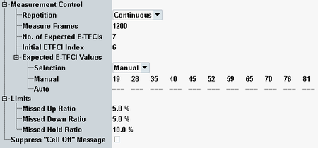

The "Measurement Control" parameters configure the scope of the measurement. A limit can also be defined. In addition, the "Cell Off" message display is configurable.
See also: "Statistical Settings"

Defines how often the measurement is repeated if it is not stopped explicitly or by a failed limit check.
- Continuous: The measurement is continued until it is explicitly terminated. The results are periodically updated.
- Single-Shot: The measurement is stopped after one statistics cycle.
Single-shot is preferable if only a single measurement result is required under fixed conditions, which is typical for remote-controlled measurements. Continuous mode is suitable for monitoring the evolution of the measurement results in time and observe how they depend on the measurement configuration, which is typically done in manual control. The reset/preset values therefore differ from each other.
Specifies the number of subframes to be measured per measurement cycle (statistics cycle). The number of subframes equals to the number of relative grant values transmitted per measurement cycle (one value per TTI).
Remote command:Specifies the number of valid E-TFCI values in the table "Expected E-TFCI Values".
Remote command:Sets the position of the initial operating point in the table "Expected E-TFCI Values". Set the initial value equal to the "AG Index". If the operating point of the UE is shifted outside the E-TFCI range, the initial operating point is readjusted.
Remote command:Configures the E-TFCI values expected from the UE.
The automatic calculation depends on the current DL and UL signal configuration. The measurement starts at the initial E-TFCI index. With the correct settings, the calculated E-TFCI values are in ascending order. This mode is recommended unless a special UE configuration is used, where the calculated values need to be corrected manually.
In the manual settings, the values must correspond to the R&S CMW and UE configuration. The values must be all different and in ascending order.
Remote command:Defines an upper limit for number of relative grant values that the UE received in error during a "Missed Up/Down" or "Missed Hold" test as selected via the wizard (see "Using the WCDMA Wizards").
Refer to "Suppress "Cell Off" Message".